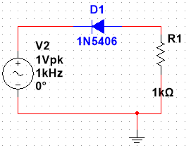
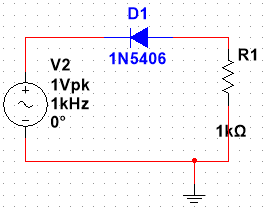

Di anoda ini, titik minimumnya adalah 617,6759m (mili ampere) dan titik maksimumnya adalah 999,4739 (mili ampere). Sedangkan katoda titik minimumnya adalah -89,1667m (mili ampere) dan titik maksimumnya adalah 892,0773 m. 😁🙏